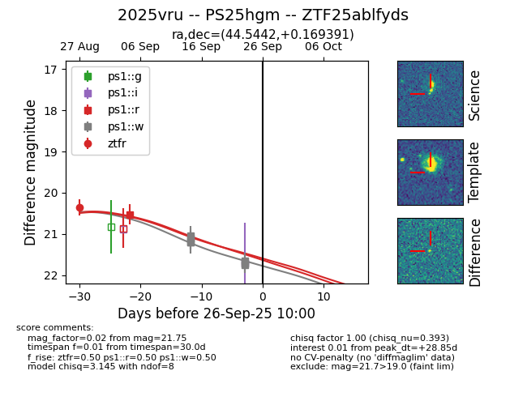
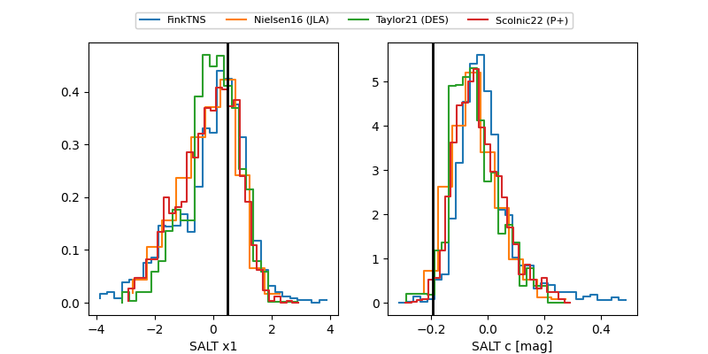

FINK: ZTF25ablfyds
Lasair: ZTF25ablfyds
ALeRCE: ZTF25ablfyds
TNS: 2025vru
YSE: 2025vru
ZTF25ablfyds (ztf,fink)
2025vru (tns,yse)
PS25hgm (panstarrs)
equatorial (ra, dec) = (44.5442,+0.16939)
galactic (l, b) = (176.2918,-49.11153)


last ps1::r=20.52, ps1::w=21.75, ztfr=20.36
1 ps1::r, 7 ps1::w, 1 ztfr detections